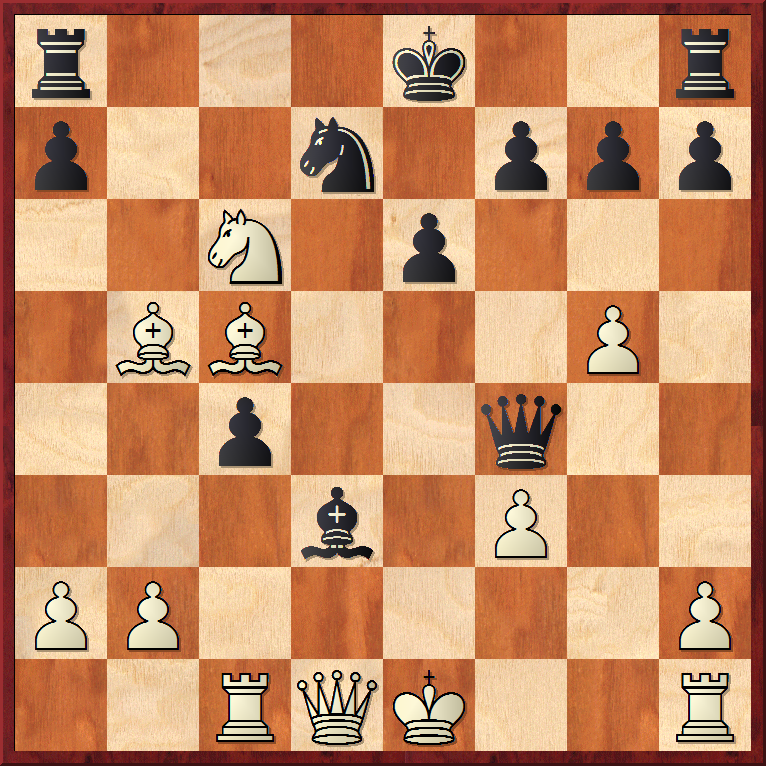

目前对付卡罗康防御比较常见的变化之一，目的是通过封闭中心，白方空间比黑方大，将来可以通过王翼或中心对黑方展开进攻。其他比较常见的变化还有3.Nc3 dxe4 4.Nxe4 Bf5 5.Ng3 Bg6 6.h4 h6 7.Nf3 Nd7 8.h5 Bh7 9.Bd3 Bxd3 10.Qxd3 e6 11.Bd2 Ngf6 12.0–0–0或 3.exd5 cxd5 4.Bd3 Nc6 5.c3 Nf6 6.Bf4等等。
3...Bf5 4.Nc3最近白方比较流行4.Nf3 e6 5.Be2，这里黑方选择也很多，可以5...Ne7,5...Nd7或5...c5等等。
4...e6 5.g4 Bg6 6.Nge2现在白方如果6.h4急于去进攻黑方的象，黑方可以应予6...h5，这里不管白方7.g5或者7.gh，黑方将在f5将形成一个强有力的据点，如：Ne7-Nf5。
6...c5 7.Be3这里白方就可以选择7.h4了，如黑方7...h5，白方可以选择 8.Nf4进攻黑象，复杂。对局中白方选择的是另一路比较古老的变化。
7...Nc6 8.dxc5 Nxe5 9.Nd4 Nd7 10.Bb5这里常见的是10.b4 Ngf6 11.g5 Ne4 12.Nxe4 Bxe4 13.f3 Bg6 14.h4复杂；赛后复盘白方的想法是10...Bxc5 11.Nxe6 fxe6 12.Bxc5 a6 （ 12...Ne7 13.Qe2，白优 ）13.Bxd7+ Qxd7 14.Qd4! （ 阻止黑方Ne7再0-0的计划 ） Nf6 15.0–0–0，之后黑方只能长易位，白方稍好；但是黑方可以先10...a6抢一步先手，在11.Ba4之后再 Bxc5吃兵，接下来可能是 12.Nxe6 fxe6 13.Bxd7+ Qxd7 14.Bxc5 Ne7，黑方顺利解决王滞留在中心的问题。
10...Ngf6 11.g5 Ne4 12.Nxe4 Bxe4 13.f3 Bg6 14.c6这里也许走14.b4先控制局面会更好，对局中白方的想法是利用黑方出子慢，打开局面，进攻黑王。
14...bxc6 15.Nxc6 Qc7 16.c4 dxc4 17.Rc1 Bd3 18.Qa4?白方步步紧逼，想通过c线和a4-e8斜线对黑王展开攻击，但忽略了白王同样也是滞留在中心，这里应该选择18.Bxc4，但在18...Bc4 19.Rc4 Nb6 20.Rc1 Bd6 21.Qd4 0-0黑方顺利解决王在中心的问题，前景不错。 现在虽然黑方出子较慢，白王看上去比较安全，但是：
18...Bc5!先手引离白方防守的黑格象！
19.Bxc5 Qf4!白方在走18.Qa4时正是忽略了黑方这一步棋，现在黑方先手捉车，同时准备20...Nc5再21...Qe3。
20.Qd1 白方长考40分钟最终选择了退后防守，想在黑方20...Nxc5之后 21.Qd2 简化或者逼退黑后来缓解黑方给白王带来的压力，这里也许只能20.Rxc4 Bxc4 21.Qxc4 Qxc4 22.Bxc4 Nxc5黑方多半子胜势。
20...a6!既然白方准备21.Qd2，那么先逼退白象到a4再21...Nc5，给白后多带来一个保护象的任务，不给白方Qd2兑后的机会。
21.Bxc4跑c5象也是败势，如：21.Bf2 axb5 22.a3 Ne5 23.Nd4 Rd8 24.Qd2 Rxd4 ，白方王前弱点过多，难以防守，黑胜势。
21...Nxc5黑棋胜势。白方随着前两步棋的长考钟面时间已所剩不多，慌乱之中走了：
22.Kf2 Ne4+ 23.Kg2 Qxg5+ 24.Kh3 Nf2#黑胜。0-1